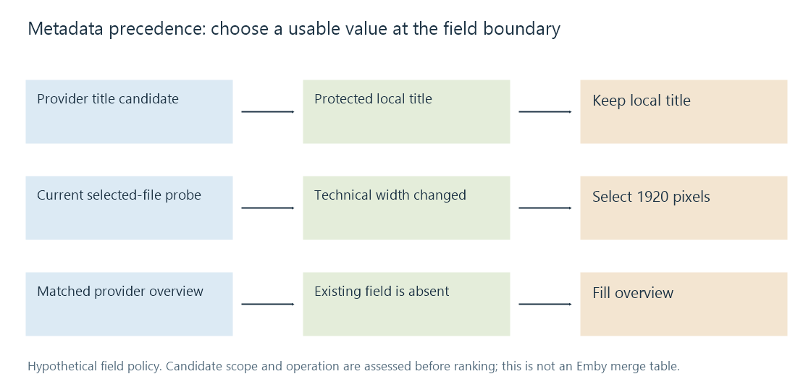

Metadata precedence
Metadata precedence is the field- and operation-dependent policy for selecting among local, provider, derived and edited candidate values.
A media item can receive values from file tags, local records, remote catalogues and user edits. Precedence determines which candidate becomes the current value.
The decision can depend on the field and the operation. Treating every refresh as “the newest source wins” loses important distinctions.
Decide what is eligible before ranking it
A proposed value first needs to describe the intended entity and field. A movie year from a same-title television series is not a useful competing movie value simply because that source has high priority.
Likewise, an audio track's language and a work's original language have different scope. A correct value in one field can be incorrect if copied into the other.
Eligibility can also depend on parsing, supported mapping and completeness. The absence of a usable candidate is different from a low-ranked candidate.
An original field-level merge model
Suppose an invented library policy preserves deliberate title edits, probes technical dimensions from the selected file and permits a provider to fill missing descriptions:
| Field | Existing state | Incoming candidate | Illustrative result |
|---|---|---|---|
| Display title | User-edited and protected | Provider's standard title | Keep the protected title |
| Video width | Old encode: 1280 | Current probe: 1920 | Use the current file's value |
| Overview | Missing | Matched provider's overview | Fill it |
| Genre list | Local curated list | Another provider's list | Apply the chosen replace/merge rule |
| Capture time | Camera time without known zone | File-copy timestamp | Keep their distinct meanings |
This is a teaching policy, not a published Emby source-order table. It illustrates why one blanket priority list cannot answer all the decisions.

A field can also retain its provenance: choosing the provider overview should not relabel the user-edited title as provider-authored.
Missing, blank and clear are not synonyms
An absent field can mean that a source did not supply a claim. An empty string can mean incomplete input, or it can be the representation of a deliberate clear operation under a particular schema.
A merger needs a rule for that distinction. Treating every absent field as a request to erase the existing value can remove useful data during a partial update. Ignoring every explicit clear can make it impossible to remove an incorrect description.
Lists add another choice. Replacing a list, appending values and computing a deduplicated union produce different results. A union can retain stale or contradictory entries that were meant to be removed.
A scalar title normally needs selection rather than concatenating all candidates into a longer title. The field's meaning guides the operation.
Trace one partial update
For an original policy experiment, assume the existing record has a protected title, an absent overview, and the genre list [Drama, Railway]. A matched incoming source supplies an ordinary title, an overview, and [Drama, Mystery].
The merge can proceed field by field:
- Verify that the incoming record refers to the intended entity. Reject the batch as a match source if it belongs to the same-title series instead.
- Keep the existing title because this experiment treats that protected edit as ineligible for replacement.
- Accept the overview because the existing field is absent and this candidate supplies it.
- Apply the declared genre-list rule rather than treating it as a scalar string.
Under replace, the result is [Drama, Mystery]. Under a stable union, it is [Drama, Railway, Mystery]. If Railway was an outdated provider label, union retains it; if it was deliberate local classification, replacement removes it. Neither operation is intrinsically the right answer without the field policy.
Now consider an incoming update that contains no overview field. In this experiment, that absence preserves the current overview. A separately recognized explicit-clear operation removes it. Recording which operation occurred makes the two outcomes distinguishable.
A successful repeated update should also avoid accumulating duplicate list entries. A stable deduplicated union yields the same three labels on the second application; blindly appending the incoming two strings does not.
The example is deliberately explicit about entity, protection, absence and list semantics. It is not an implementation of Emby’s internal merge algorithm.
Refresh has a declared purpose
An operation that searches for missing information has different intent from one that replaces existing metadata. Technical probing and provider fetching are also different activities.
Emby's Metadata Manager documentation describes refresh modes and protecting changes using field or item locks. Its controls establish concrete product behavior; the actual library/provider configuration and operation determine the applicable combination.
Learn's conceptual model does not infer an undocumented universal ordering of every Emby reader and provider. When evaluating a change, keep the selected operation, field state and relevant source candidates together.
Identity mistakes survive good merge rules
A precisely applied policy can still install the wrong synopsis if the item was matched to another film. Correcting that requires an identity decision, not merely moving the same bad provider response higher in the source order.
Similarly, a correct work-level title does not prove that a chosen poster belongs to the intended edition or language. Related records need the right scope before their values are selected.
A useful comparison records the existing value and protection state, the incoming value and source/entity, and the result. That makes a surprising refresh explainable as a field decision rather than as an unexplained failure to “keep metadata”.